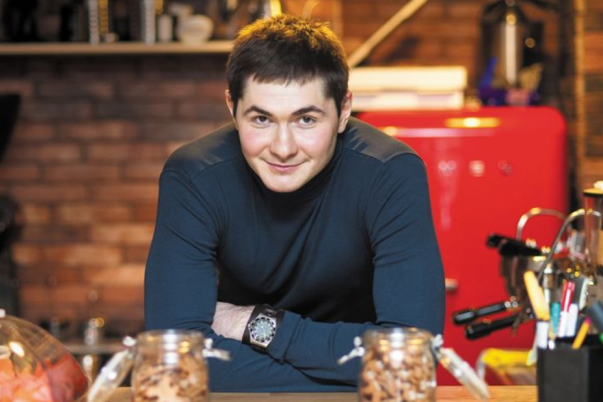

Добро пожаловать на сайт нашего кафе The Coffee! Мы готовим кофе с любовью. Каждая чашка - это особый момент, который каждый должен переживать каждый день!
Здесь Вы сможете узнать историю нашей кафешки, наш способ обжарки, поставщик наших кофейных зерн и их родина. А так же можете посмотреть наше меню или заказать напитки или кофейные зерна.О нас
Наша история
The Coffee открылся в 2018 году в Риге. Всё началось с маленькой мечты — создать место, где каждый человек может найти свою идеальную чашку кофе. Сегодня мы — одна из самых любимых кофеен города.
Наша идея
Мы верим, что кофе — это не просто напиток, а целый ритуал. Наша идея проста: использовать только лучшие зёрна, готовить с душой и создавать атмосферу, в которой хочется задержаться.
Наши ценности
Качество, честность и забота о людях — вот что лежит в основе всего, что мы делаем. Мы работаем напрямую с фермерами, платим справедливую цену и заботимся об окружающей среде.
Наша команда
Наши бариста — настоящие профессионалы с многолетним опытом. Каждый из них прошёл обучение в лучших школах бариста Европы и влюблён в своё дело.

Александр
Владелец
Основал The Coffee в 2018Алексей
Старший бариста
5 лет опыта · Чемпион латте-арта 2022
Мария
Бариста
3 года опыта · Специалист по сервису
Иван
Обжарщик
7 лет опыта · Работал в КолумбииСофия
Директор кафе
Заместитель АлександраНаши кофейные зерна
🇪🇹 Эфиопия — Иргачеффе
Происхождение: Высокогорье Иргачеффе, 1800–2200 м над уровнем моря
Вкус: Черника, жасмин, цитрус, яркая кислотность
Обжарка: Светлая — раскрывает фруктовые и цветочные ноты
Метод обработки: Натуральный (сухой)
🇨🇴 Колумбия — Уила
Происхождение: Регион Уила, Южная Колумбия
Вкус: Карамель, красное яблоко, молочный шоколад
Обжарка: Средняя — баланс сладости и тела
Метод обработки: Мытый (влажный)
🇾🇪 Йемен — Мокка
Происхождение: Горные террасы Йемена, древнейший сорт
Вкус: Тёмный шоколад, специи, табак, вино
Обжарка: Тёмная — насыщенная и глубокая
Метод обработки: Натуральный, традиционный
Наш процесс обжарки
Отбор
Каждая партия зёрен вручную проверяется на качество перед обжаркой
Обжарка
Обжариваем небольшими партиями при точной температуре 200–230°C
Дегустация
Каждая партия проходит каппинг — профессиональную дегустацию
Упаковка
Зёрна упаковываются в течение 48 часов после обжарки